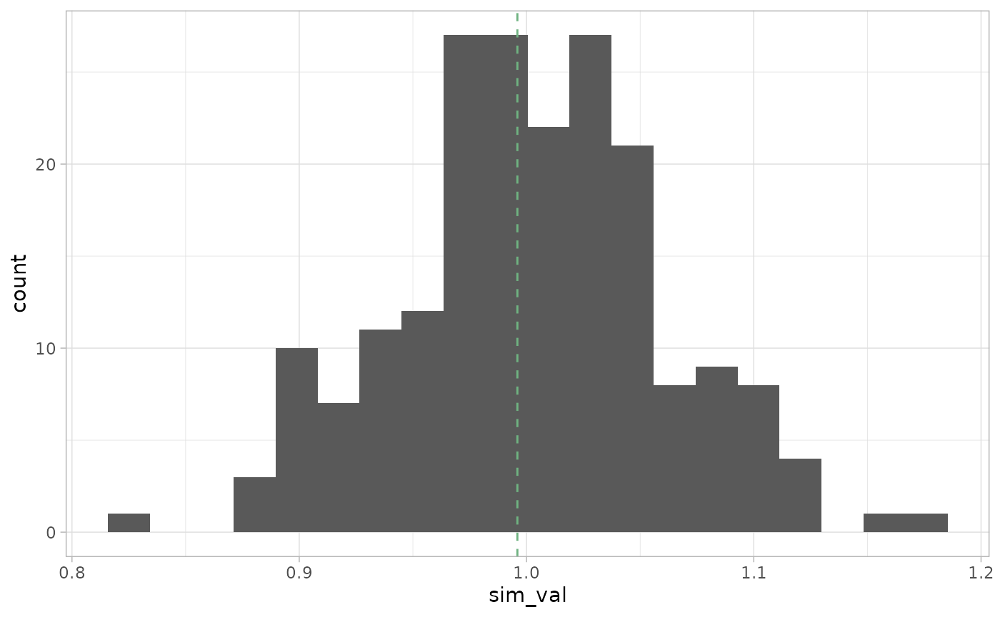

Conditional Permutations with sfdep
Source:vignettes/articles/conditional-permutation.Rmd
conditional-permutation.RmdIn the lattice approach to spatial analysis, calculating p-values is often done based on a conditional permutation approach as outlined by Anselin 1995.
Conditional permutation can be summed up with the question “if I were to hold this observation constant, and change it’s neighbors, will my statistic be the same?”
To understand this a bit better, lets first obtain our neighbors and weights lists, as well as our numeric variable.
library(sfdep)
nb <- st_contiguity(guerry)
wt <- st_weights(nb)
x <- guerry$crime_perssfdep exports a function cond_permute_nb() to allow
users to create conditional permutations of their nb lists. This works
by first identifying the cardinality (number of neighbors) of each
observation. Then, for each location from i through n—where i is the
position index and n is the number of observations—we sample k values,
where k is the number of neighbors for observation i, from the set of
values containing 1 through n minus i
.
Inference using conditional permutation
With spatial data, we always start from the assumption of spatial randomness. Traditional hypothesis testing like t-test often use an assumption of normality. This assumption, however, is often broken in spatial data. So analytical p-values (p-values that come from a reference distribution such as the normal distribution) are often unreliable, or inaccurate measures of significance. For this reason, in ESDA, we often use simulated, or pseudo, p-values.
Simulated p-values are calculated by creating a reference distribution and comparing our observed statistic to the reference distribution. The reference is created by making M conditional permutations of our data set and calculating a test statistic. Then the ratio of times the simulated statistic is greater than the observed statistic (in either direction) to the number of simulations becomes our simulated p-value.
Worked Example
We can use cond_permute_nb() to create a conditional
permutation of the neighbors list. From that permuted neighbor list we
can then create a new weights list and calculate the global Geary C for
each of the permutation.
p_nb <- cond_permute_nb(nb)
p_wt <- st_weights(p_nb)
observed <- global_c(x, p_nb, p_wt)
observed
#> $C
#> [1] 0.9959854
#>
#> $K
#> [1] 2.400641If we did this say, 199 times, we can make a fairly robust reference
distribution. We will do this by putting the above code in a
replicate() call. replicate() execute some
code a number of times as determined by the first argument. This is how
I calculate simulated p-values for many measures in sfdep.
reps <- replicate(199, {
p_nb <- cond_permute_nb(nb)
p_wt <- st_weights(p_nb)
global_c(x, p_nb, p_wt)[["C"]]
})Here we can plot the reference distribution and the observed value over the reference distribution.
library(ggplot2)
ggplot(data.frame(sim_val = reps),
aes(sim_val)) +
geom_histogram(bins = 20) +
geom_vline(xintercept = observed[["C"]],
color = "#6fb381",
lty = 2,
) +
theme_light()
We can see that the observed Geary C value is not very extreme and falls some what close to the center of our distribution.
We can now calculate the pseudo p-value using the formula
# simulated p-value
(sum(observed[["C"]] <= reps) + 1) / (199 + 1)
#> [1] 0.55This is the approach taken by Pysal and by sfdep where other methods do not apply or are not provided by spdep.